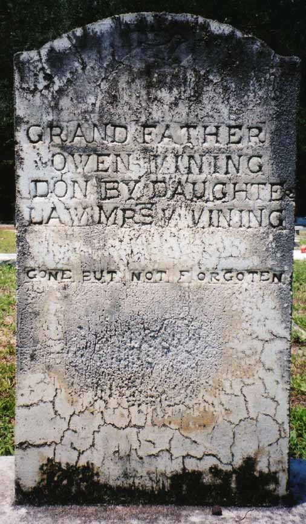
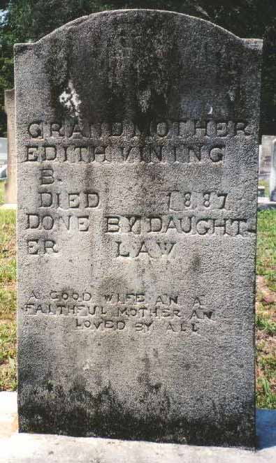

Census Data
| 1850 | 1860 | 1870 | 1880 | 1890 | 1900 | |
| Owen Vining | 36 | 45 | 62 | ? | dead | |
| Edith Ann (Ivey) Vining | 24 | 34 | 45 | 53 | dead | |
| James Vining | 5 | 14 | married and living in separate household | |||
| Thomas Vining | 2 | 12 | dead | |||
| Rodia Vining | ? | 22 | [living? in separate household] | |||
| Ellen Vining | 10 | 20 | living in separate household | |||
| Bana (Bainley, Bench) Vining | 7 | 18 | married and living in separate household | |||
| Mary Vining | 9 | 19 | married [and living in separate household?] | |||
| Vincent Vining | 7 | 16 | married [and living in separate household?] | |||
| John Ivey Vining | 4 | 13 | ? | dead |


Death Data
Gravestones of Owen Vining and Edith Ann (Ivey) Vining, in Mt. Zion Baptist Church Cemetery, Axson, Georgia:
